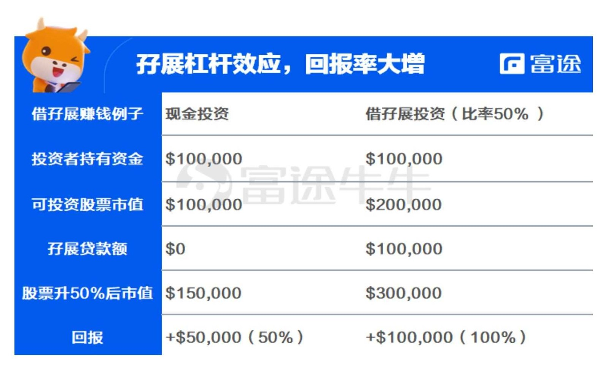
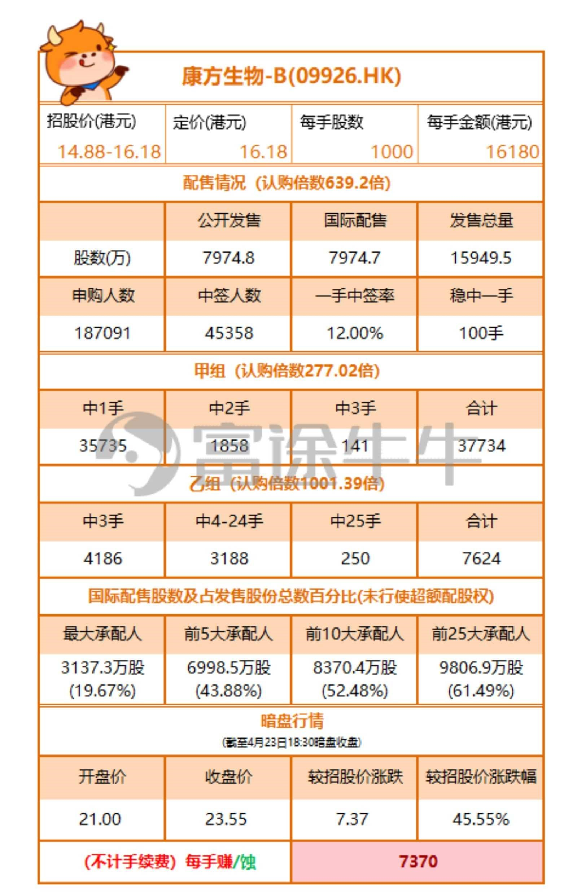

6.1.8.1. 打新秘籍 | 热门新股100%中签？孖展顶头槌了解一下
在香港媒体的新闻中，我们经常会听到大款「顶头槌」「孖展」认购新股的报道，究竟什么是顶头槌？怎样运用孖展？为什么有人要这样投单？个中精妙就涉及到打新的机制和大单认购新股赚钱概率。
香港是用「认购愈多，分配愈多」的机制，若要提高中签率，最简单粗暴的办法就是增加资金。巧妙掌握孖展和顶头槌，牛牛助你打新100％、
6.1.8.1.1. 01 活用孖展抽新股
「孖展」一词来自香港，英文为Margin，即保证金的意思。在香港市场上，银行和证券公司一般向投资者提供融资服务。
开设了「孖展账户」的投资者，在进行股票买卖时，可利用他们提供的融资额进行杠杆投资，放大收益，一般情况下，证券行或银行向投资者提供这种服务会收取一定的利息。
若新股「僧多粥少」，每名散户能供抽中的机会便会降低，故不少散户都会向银行或券商借孖展入飞，以增加抽中新股的机会。
针对拟上市的新股，各券商会依据自身对新股的风险评估，决定能借给客户用于购买股票的额度，一般最大杠杆倍数不超过9倍。即，牛牛账户内若有10000港币，最多可融资认购100000港币的新股，其中90000港元为融资金额（孖展），融资额度翻倍，自然打到新股的概率也大大提升。
孖展杠杆效应可使回报率大增

（为方便计算，上述例子未计算股息回报、抒息利息、交易手续费等。）
假设投资者拥有10万元现金，买入100股市值100元的股票，若股价其后升至150元，即股票市值升至15万元，投资者获利50％。
在股票升值时，借孖展能产生杠杆效应，使投资者享受本小利大的成果。用相同例子，这位手持10万元现金的投资者的孑子展比率是50％，他最多可买入20万元股票[10万元/
（100％一孖展比率50％）]。
股票升值50％后，市值达30万元，在偿还贷款后，投资者获利达100％。当然，投资者还要支付孖展利息，原则上只要股价升幅高于于借贷及交易成本，就能赚钱。
相反，在股票价格下跌时，借孖展的股民损失也会更加惨重。假设投资者用10万元现金买股票，股票市值跌至5万元时，他将损失50％，但若然是透过孖展贷款，把投资额倍增至20万元，股票贬值50％后，他将损失100％本金。
不管是在新股认购开始后第几天申购，融资利息都从认购截止日开始计算，至公布结果日停止计算。假设，利率为2％，认购截止日为11月4日，11月12日上市，11月11日公布结果，则利息从11月4日开始算，融资金共占用8天，应付利息=90000*2%*8/365。
不少股市小白对于「孖展」这个字眼可能有点恐惧，总觉得属于「高杠杆、高风险」的操作手法，不敢轻易采用。其实，这是混淆了「借孖展抽新股」和「借孖展炒股」两个概念。前者虽然有一定的风险，但对于有经验的投资者而言，却是经常用到的投资技巧，只要用得其所，就能大大增加成功认购新股的机会。
6.1.8.1.2. 02 顶头槌 是否 Too Good To Be True?
港股的「顶头槌」当然和足球没有关系。其意思是抽新股时，决定下重注以「新股发行股数上限」认购。上限的计算公式是公开发售数目（未计算回拨）的一半。
举个例子，A企业总发行1亿股，90％拨到国际配售，10％作为公开发售，投资者最多可以认购公开发售1000万股中的一半，500万股。另一方面，认购新股时公开发售的股份一般会分甲、乙两组，乙组主要是机构和高净值客户，而「顶头槌」会被归纳到乙组认购最多股份人士。
认购顶头槌所需资金规模有大有小（认购金额：申购价上限*认购股数）。少的只要五百多万，多的需要十数亿的资金，比如小米，申购顶头槌需要12亿，马爸爸可能一时都拿不出来这么多现金来。
对一般投资者来说，只需要留意：顶头槌的申购数量通常反映了新股的热度。
以上月大热的康方生物为例，康方乙组大军7624人，顶头槌250张；顶头槌一张申购金额1.3亿元，以10倍杠杆、2.88％的利率收费计，融资成本5.54万。由于顶头槌中签25手，中签资金40.45万，融资成本占比13.69％，康方至少涨幅在13.69％以上可以保本，而最终康方生物首日高开45％，也是令投资者收获颇丰。

诚然，「顶头槌」的年化回报相当丰厚，但这仅是理论收益。毕竟投资者不可能每一新股都恰好有那么多的闲置资金，中签后这么巧在最高价出掉（当然也有可能持有时间更长收益更高）。
考虑交易佣金和印花税等费用，实际的回报也会打上折扣。更重要的是，资金运用上如何调动，都需要投资者根据实际情况具体分析。
6.1.8.1.3. 结语
所有资金都只用来打新虽然并非不可，但略微会显得「剑走偏锋」。投资而言，认真研究基本面，挖掘企业的合理价值才是正道。如果投资者认可某一家公司，那么「顶头槌」和「孖展」或许能为大家提供多一条投资的渠道和方法，结合其他投资策略融会贯通，方能进退有余，博取最大收益。